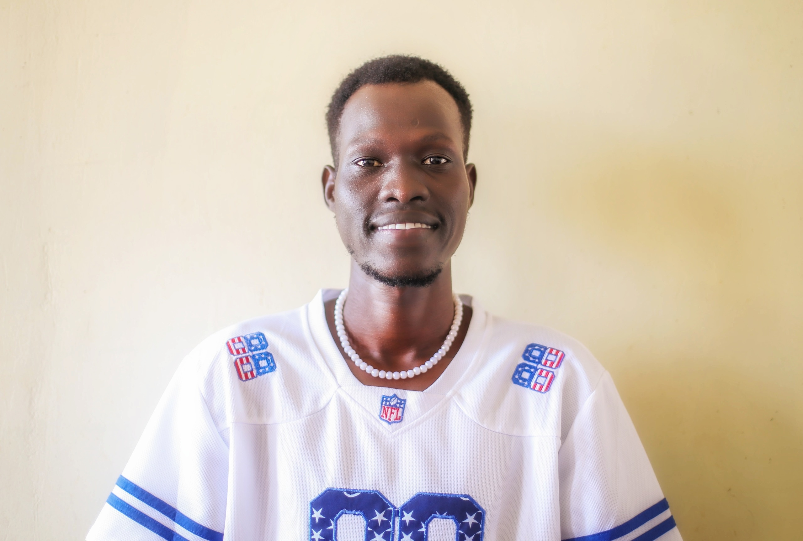

About Me

My name is Nyang Both Manyal. I am a Community Health Nursing graduate with a passion for technology, creativity and community development.
I have experience in teaching Mathematics and Physics, and I have developed digital skills in web design, graphic design and problem-solving through Mobile LEAP at Learning Lions.
I believe in continuous learning, innovation and using technology to create opportunities and solve problems in my community.
My Work and Skills
Web Development
Creating websites using HTML and CSS to help individuals and businesses establish an online presence.
Graphic Design
Designing logos, flyers, posters and business cards for individuals and businesses.
Teaching
Teaching Mathematics and Physics, preparing lessons and supporting learners in their academic development.
Community Health
Applying my community health nursing knowledge to promote health awareness and wellbeing.
Entrepreneurship
Exploring business opportunities and using digital skills to develop solutions to community challenges.
Contact Me
I welcome opportunities for collaboration, professional networking and learning.
Email: nyangbothmanyal15@gmail.com